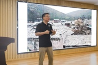

<td align="center" class="tbcolor10" colspan="2" valign="top">
<table border="0" cellpadding="0" height="100%" width="100%">
<tbody><tr><td align="right" height="35px" style="font-size:9pt">
<a href="javascript:window.close()" title="关闭本窗口">关闭窗口</a>｜<a href="print.asp?id=548515" target="_blank" title="打印本页内容">打印张贴版</a>    

</td></tr>
<tr>
<td align="center" height="500" valign="top">
<table border="0" cellpadding="4" cellspacing="0" height="100%" style="border-collapse: collapse;word-break:break-all;" width="86%">
<tbody><tr>
<td align="center" height="80px"><span style="font-family:方正小标宋简体;font-size: 25px;color: #C70E5C">“影像民族志的学术视角和实践反思”学术讲座在传播学院举办</span></td>
</tr>
<tr>
<td align="center" height="50px" style="font-size: 9pt"><font color="#808080">传播学院　2025/5/19 14:44:00</font><br/> 
<font color="#F8F8F8" style="font-size:9pt">（钟沛基 2022280095）</font></td>
</tr>
<tr>
<td height="300" valign="top">
<p class="MsoNormal" style="text-indent:21.0000pt;line-height:150%;"><span style="mso-spacerun:'yes';font-family:宋体;line-height:150%;
font-size:12.0000pt;mso-font-kerning:1.0000pt;">5月16日下午，“影像民族志的学术视角和实践反思”学术讲座在传播学院L7-1016会议室举办。本场讲座由中山大学新闻传播学院熊迅教授主讲，深圳大学传播学院副院长黄玉波教授主持，传播学院师生参加学习。</span><span style="mso-spacerun:'yes';font-family:宋体;line-height:150%;
font-size:12.0000pt;mso-font-kerning:1.0000pt;"><o:p></o:p></span></p><p class="MsoNormal" style="text-indent:21.0000pt;line-height:150%;"><span style="mso-spacerun:'yes';font-family:宋体;line-height:150%;
font-size:12.0000pt;mso-font-kerning:1.0000pt;">讲座伊始，黄玉波教授对熊迅教授的到来表示热烈欢迎，并予以简要介绍。熊迅教授现任中山大学新闻传播学院教授、创意媒体设计系主任、中山大学视觉传播研究中心主任，研究领域聚焦于影像传播、纪录片制作、视觉人类学、媒介人类学、中国西南民族文化等。</span><span style="mso-spacerun:'yes';font-family:宋体;line-height:150%;
font-size:12.0000pt;mso-font-kerning:1.0000pt;"><o:p></o:p></span></p><p class="MsoNormal" style="text-indent:21.0000pt;line-height:150%;"><span style="mso-spacerun:'yes';font-family:宋体;line-height:150%;
font-size:12.0000pt;mso-font-kerning:1.0000pt;">熊迅教授通过播放原创人类学纪录片《龙州侬峒》作为整场讲座的开场，以此为案例，介绍了作为研究方法的影像民族志；并基于自身的研究和摄制经历，生动地分享了人类学研究过程中的组织协调难点、文化交流差异等问题。熊迅教授指出，民族志在人类学研究中占据核心地位，而影像民族志则通过纪录片的形式，呈现出文化样态的整体性、专题性和时空特性。</span><span style="mso-spacerun:'yes';font-family:宋体;line-height:150%;
font-size:12.0000pt;mso-font-kerning:1.0000pt;"><o:p></o:p></span></p><p class="MsoNormal" style="text-indent:21.0000pt;line-height:150%;"><span style="mso-spacerun:'yes';font-family:宋体;line-height:150%;
font-size:12.0000pt;mso-font-kerning:1.0000pt;"><font face="宋体">熊迅教授强调，在影像民族志的研究过程中，研究者</font><font face="宋体">“进入”和“退出”是一个复杂的问题，需要大量的田野工作，尤其是需要深入的参与式观察工作，这需要研究者具备跨文化比较、文化整体观与相对性等思维能力。同时，影像民族志的伦理问题至关重要，这需要研究者在摄制过程中不断反思自身在研究过程中的立场和行为。</font></span><span style="mso-spacerun:'yes';font-family:宋体;line-height:150%;
font-size:12.0000pt;mso-font-kerning:1.0000pt;"><o:p></o:p></span></p><p class="MsoNormal" style="text-indent:21.0000pt;line-height:150%;"><span style="mso-spacerun:'yes';font-family:宋体;line-height:150%;
font-size:12.0000pt;mso-font-kerning:1.0000pt;">   </span></p><p class="MsoNormal" style="text-indent:21.0000pt;line-height:150%;"><span style="mso-spacerun:'yes';font-family:宋体;line-height:150%;
font-size:12.0000pt;mso-font-kerning:1.0000pt;">                      　</span><span style="text-align: center; font-family: 宋体; line-height: 150%; font-size: 12pt;">组图</span><span style="text-align: center; font-family: 宋体; line-height: 150%; font-size: 12pt;">. </span><span style="text-align: center; font-family: 宋体; line-height: 150%; font-size: 12pt;">讲座现场</span></p><p class="MsoNormal" style="text-indent:21.0000pt;line-height:150%;"><span style="text-align: center; font-family: 宋体; line-height: 150%; font-size: 12pt;"></span></p><p class="MsoNormal" style="text-indent:24.0000pt;line-height:150%;"><span style="mso-spacerun:'yes';font-family:宋体;line-height:150%;
font-size:12.0000pt;mso-font-kerning:1.0000pt;"><font face="宋体">最后，王伟副教授对讲座内容进行总结，并组织在场师生开展提问。传播学院助理教授程遥、刘松吟，针对于民族志影像的研究方法和研究过程的相关细节展开提问；国际传播方向专业硕士邓辉焱，针对于</font><font face="宋体">“边境族群视听内容的生产与国际传播”项目的研究重心进行提问，熊迅教授一一予以详细解答。</font></span><span style="mso-spacerun:'yes';font-family:宋体;line-height:150%;
font-size:12.0000pt;mso-font-kerning:1.0000pt;"><o:p></o:p></span></p><p class="MsoNormal" style="text-indent:24.0000pt;line-height:150%;"><span style="mso-spacerun:'yes';font-family:宋体;line-height:150%;
font-size:12.0000pt;mso-font-kerning:1.0000pt;">   </span></p><p class="MsoNormal" style="text-indent:24.0000pt;line-height:150%;"><span style="mso-spacerun:'yes';font-family:宋体;line-height:150%;
font-size:12.0000pt;mso-font-kerning:1.0000pt;">                      　</span><span style="text-align: center; font-family: 宋体; line-height: 150%; font-size: 12pt;">组图</span><span style="text-align: center; font-family: 宋体; line-height: 150%; font-size: 12pt;">.</span><span style="text-align: center; font-family: 宋体; line-height: 150%; font-size: 12pt;"> <font face="宋体">提问环节</font></span></p><p class="MsoNormal" style="text-indent:24.0000pt;line-height:150%;"><span style="text-align: center; font-family: 宋体; line-height: 150%; font-size: 12pt;"></span></p><p class="MsoNormal"><span style="mso-spacerun:'yes';font-family:宋体;font-size:12.0000pt;
mso-font-kerning:1.0000pt;">  本场讲座不仅为传播学院师生提供了一个深入学习影像民族志的宝贵机会，也激发了大家对人类学研究方法的操作实践、核心价值和伦理反思等方面的深入思考，讲座在掌声中圆满结束。</span></p><p align="center" class="MsoNormal" style="text-align:center;line-height:150%;"><span style="mso-spacerun:'yes';font-family:宋体;line-height:150%;
font-size:12.0000pt;mso-font-kerning:1.0000pt;"><o:p></o:p></span></p><p align="center" class="MsoNormal" style="text-align:center;line-height:150%;"><span style="mso-spacerun:'yes';font-family:宋体;line-height:150%;
font-size:12.0000pt;mso-font-kerning:1.0000pt;"><o:p></o:p></span></p></td>
</tr>
<tr><td height="0" style="font-size: 9pt"></td></tr>
<tr><td align="right" style="font-size: 9pt">撰稿：何奕　审核：王伟、严嘉伟、黄玉波  <br/> </td></tr>
</tbody></table>
</td>
</tr>
</tbody></table>
</td>
